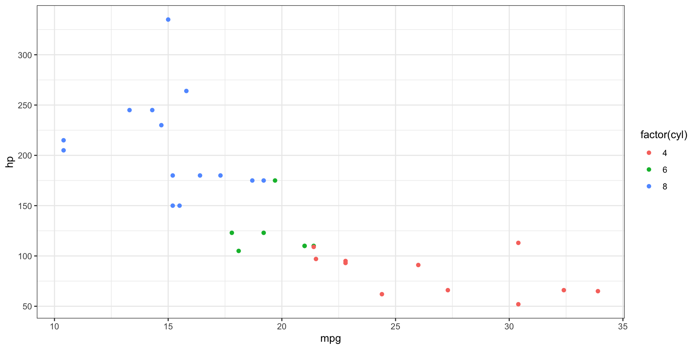

![]()


ggplot(mtcars, aes(x = mpg, y = hp)) +
geom_point(aes(color = factor(cyl)))
# Save the last printed plot
ggsave(filename = "my_plot_1.pdf")
# Save the plot to a variable first
plot <- ggplot(mtcars, aes(x = mpg, y = hp)) +
geom_point(aes(color = factor(cyl)))
ggsave(filename = "my_plot_1.png", plot)Data Visualisation in R
Base R plots
- Graphs can be easily generated with the base R syntax
ggplot2
ggplot2is a lot more useful and user friendly than base R, making plots look a lot nicer and with more options for building and displaying graphics- We’ll start with an old favourite, the
mtcarsdataset!
Themes
- A “theme” controls the finer points of the plot, like the font size and background colour
- This is essentially customising the non-data elements
- For example, change the default grey background to white background1
Themes - Global
- These themes can be set globally, so for all plots, using the
theme_set()function
- You can see some more themes provided by ggplot2 here
Quick plots with qplot
- A quicker version of ggplot! Good for very basic figures
Aesthetics: Size and Shape
- We can also map the number of cylinders to the
sizeorshapeaesthetic
Aesthetics: Shape & Colour
- We can combine aesthetics as we like too!
Aesthetics: Fill
- Fill is yet another aesthetic
Facets: layout
- We can change the layout of the “facets” locally:
Additional Geoms
- So far we’ve only used
geom_point(), but there are naturally many more geoms we can use geom_smooth()draws a smoothed line based on the trend of the provided data- They can be used individually, or layered on top of one another, which is the core of the grammer of graphics
Combining geoms
- Here we layer two geoms
- Note that the order of geoms can matter! (though in this case it doesn’t :P)
Layering geoms and additional aesthetics
- The order in which we give aesthetics can also matter
Statistical Transformations: count
- Some plots transform your data internally and plot those new values instead of raw values
- The
statargument of different plot types (geom functions) specifies the statistical transformation - For example,
geom_bar()usesstat = "count"as it’s default to create counts of the mapped variable (as in what a bar chart does):
Statistical Transformations: identity
- Another commonly used stat is “identity” when plotting bars with heights based on raw values
Positional Adjustments
- The
positionargument can control how geoms occupy space
Labels: Titles and Captions
- Another editable part of a plot are the text labels, which we can add or modify using
labs()
Annotations
- To add annotation to data points, we can use
geom_text()andgeom_label()
Annotations: ggrepl
- The
ggreplpackage can help make more legible labels
ggplot(data = mtcars,
mapping = aes(x = mpg, y = hp)) +
geom_point(aes(color = factor(cyl))) +
ggrepel::geom_text_repel(aes(
label = rownames(mtcars)),
max.overlaps = 100)
# Label only a subset
ggplot(data = mtcars,
mapping = aes(x = mpg, y = hp)) +
geom_point(aes(color = factor(cyl))) +
ggrepel::geom_text_repel(aes(
label = rownames(mtcars[1:3, ])),
data = mtcars[1:3, ])

Zooming - coord_cartesian

This is the RIGHT WAY, using coord_cartesian()
Zooming - lims

This is also not ideal, as it removes data outside the limits!
Scales
- “scale” allows you control mapping things like colour, size and shape to data values
- “scale” draws a legend or axes
ggplot2automatically adds default scales behind the scenes
Scales - defaults
- Is the same as:
Scales - axis breaks
- The naming scheme tells you the aesthetic (
x_,y_,colour_, etc) and the name of the scale (continuous,discrete)
Scales - axis labels
# Adding text to labels
ggplot(mtcars, aes(x = mpg, y = hp)) +
geom_point(aes(color = factor(cyl))) +
scale_y_continuous(
breaks = seq(0, 350, by = 50),
labels = paste0(
"HP ", seq(0, 350, by = 50)
)
)
# No labels
ggplot(mtcars, aes(x = mpg, y = hp)) +
geom_point(aes(color = factor(cyl))) +
scale_y_continuous(
breaks = seq(0, 350, by = 50),
labels = NULL)

Controlling the Colour Scale - alt palettes
Controlling the Colour Scale - manually
ggplot(mtcars, aes(x = mpg, y = hp)) +
geom_point(aes(color = factor(cyl))) +
scale_colour_manual(values =
c("black",
"pink",
"turquoise"))
# Explicitly setting the values to colours
ggplot(mtcars, aes(x = mpg, y = hp)) +
geom_point(aes(color = factor(cyl))) +
scale_colour_manual(values =
c(
`4` = "black",
`6` = "pink",
`8` = "red"
))
Compound plots
- What if you want to put two or more plots together to save?

Boxplots and Violin Plots - examples
geom_jitteris likegeom_point, but adds noise so point aren’t on top of each other, handy for mapping the raw data onto other geoms!

Boxplots and Violin Plots - numeric to categorical


ggstatsplot
- A handy way to quickly look at correlations!

Workshop time!